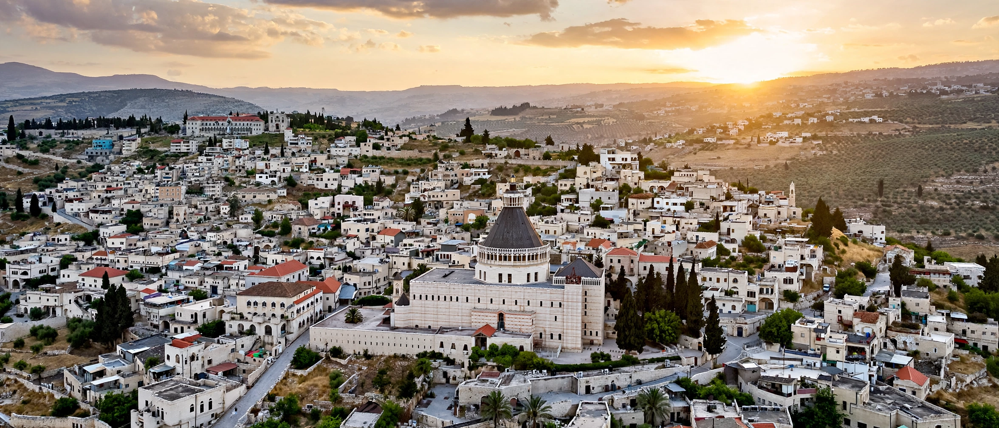

Hebrew: נצרת (Natzrat)
Arabic: الناصرة (an-Nāṣira)
Country: Israel
District: Northern
Population: ~78,000 (largest Arab city in Israel)
Nazareth is a city in the Northern District of Israel, in the Galilee. In the New Testament it is described as the childhood home of Jesus, and as such is a center of Christian pilgrimage, with many shrines commemorating biblical events. It is the largest Arab city in Israel, with a population that is roughly 70% Muslim and 30% Christian.
The village of Nazareth was small in the 1st century. After Christianity spread, churches marked sites associated with the Annunciation and Joseph's workshop. The town changed hands between Byzantine, Arab, Crusader, Mamluk, and Ottoman rulers; Tancred made it a Crusader center. Under the British Mandate and after 1948 it remained within Israel, growing into a regional commercial center; the adjacent, predominantly Jewish city of Nazareth Illit (now Nof HaGalil) was founded in the 1950s.
The Basilica of the Annunciation (completed 1969), one of the largest churches in the Middle East, stands over a grotto venerated as Mary's home. Other sites include St. Joseph's Church, the Greek Orthodox Church of the Annunciation over Mary's Well, and Mary's Well square.
Jesus · Galilee · Annunciation